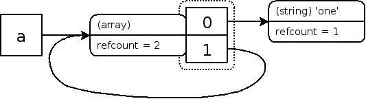
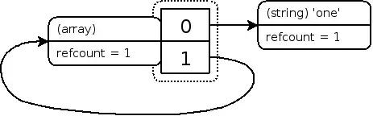

原文地址：http://www.php100.com/9/20/87255.html
写入拷贝（Copy-on-write，简称COW）是一种计算机程序设计领域的优化策略。其核心思想是，如果有多个调用者（callers）同时要求相同资源（如内存或磁盘上的数据存储），他们会共同获取相同的指针指向相同的资源，直到某个调用者试图修改资源的内容时，系统才会真正复制一份专用副本（private copy）给该调用者，而其他调用者所见到的最初的资源仍然保持不变。这过程对其他的调用者都是透明的（transparently）。此作法主要的优点是如果调用者没有修改该资源，就不会有副本（private copy）被创建，因此多个调用者只是读取操作时可以共享同一份资源。
注意：以下代码基于PHP5.6，PHP7之后引用计数机制有变化。
大家都知道，PHP是由C实现的，可是C是强类型语言，PHP怎么做到弱类型语言。一起来看下，PHP变量在C语言底层中的代码：
typedef struct _zval_struct zval;
typedef unsigned int zend_uint;
typedef unsigned char zend_uchar;
struct _zval_struct {
zvalue_value value; /*注意这里，这个里面存的才是变量的值*/
zend_uint refcount__gc; /*引用计数*/
zend_uchar type; /* 变量当前的数据类型 */
zend_uchar is_ref__gc; /*变量是否引用*/
};
typedef union _zvalue_value {
long lval; /*PHP中整型的值*/
double dval; /*PHP的浮点数值*/
struct {
char *val;
int len;
} str; /*PHP的字符串*/
HashTable *ht; /*数组*/
zend_object_value obj; /*对象*/
} zvalue_value;PHP的变量，低层是一个结构体zval,里面的zvalue_value结构体实际上是个联合体，这个联合体才是实际存放着PHP的变量值。 Zend引擎为了区别同一个zval地址是否被多个变量共享，引入了ref_count和is_ref两个变量进行标识。
运行以下代码，观察变量refcount的变化：
<?php
$foo = 1;
xdebug_debug_zval('foo');
$bar = $foo;
xdebug_debug_zval('foo');
$bar = 2;
xdebug_debug_zval('foo');
?>
//-----执行结果-----
foo: (refcount=1, is_ref=0)=1
foo: (refcount=2, is_ref=0)=1
foo: (refcount=1, is_ref=0)=1当$foo被赋值时，$foo变量的值的只由$foo变量指向。当$foo的值被赋给$bar时，PHP并没有将内存复制一份交给$bar，而是把$foo和$bar指向一个地址, 同时引用计数增加1，也就是新的2。随后，我们更改了$bar的值，这时如果直接需该$bar变量指向的内存，则$foo的值也会跟着改变。这不是我们想要的结果。于是，PHP内核将内存复制出来一份，并将其值更新为赋值的：2（这个操作也称为变量分离操作），同时原$foo变量指向的内存只有$foo指向，所以引用计数更新为：refcount=1。
下面让我们看一个查看内存的例子，可以更容易看到COW在内存使用优化方面的明显作用：
<?php
$j = 1;
var_dump(memory_get_usage());
$tipi = array_fill(0, 100000, 'php-internal');
var_dump(memory_get_usage());
$tipi_copy = $tipi;
var_dump(memory_get_usage());
foreach($tipi_copy as $i){
$j += count($i);
}
var_dump(memory_get_usage());
//-----执行结果-----
$ php t.php
int(630904)
int(10479840)
int(10479944)
int(10480040)上面的代码比较典型的突出了COW的作用，在数组变量$tipi被赋值给$tipi_copy时，内存的使用并没有立刻增加一半，在循环遍历数$tipi_copy时也没有发生显著变化，在这里$tipi_copy和$tipi变量的数据共同指向同一块内存，而没有复制。
也就是说，即使我们不使用引用，一个变量被赋值后，只要我们不改变变量的值 ，也不会新申请内存用来存放数据。据此我们很容易就可以想到一些COW可以非常有效的控制内存使用的场景：只是使用变量进行计算而很少对其进行修改操作，如函数参数的传递，大数组的复制等等等不需要改变变量值的情形。
了解了php变量的内部存储结构之后，再了解下php变量赋值相关的原理和早期垃圾回收机制。
PHP5.2中使用的内存回收算法是大名鼎鼎的Reference Counting，这个算法中文翻译叫做“引用计数”，其思想非常直观和简洁：为每个内存对象分配一个计数器，当一个内存对象建立时计数器初始化为1(因此此时总是有一个变量引用此对象)，以后每有一个新变量引用此内存对象，则计数器加1，而每当减少一个引用此内存对象的变量则计数器减1，当垃圾回收机制运作的时候，将所有计数器为0的内存对象销毁并回收其占用的内存。
但是php5.3版本之前的垃圾回收机制存在一个漏洞，即当数组或对象内部子元素引用其父元素，而此时如果发生了删除其父元素的情况，此变量容器并不会被删除，因为其子元素还在指向该变量容器，但是由于所有作用域内都没有指向该变量容器的符号，所以无法被清除，因此会发生内存泄漏，直到该脚本执行结束
如果你已经安装了Xdebug，你能通过调用函数 xdebug_debug_zval()显示”refcount”和”is_ref”的值。
举例：
由于该示例不好输出结果，用图表示，如图：

举例：
unset($a);
xdebug_debug_zval('a');如图：

php5.3版本之后引入根缓冲机制，即php启动时默认设置指定zval数量的根缓冲区（默认是10000），当php发现有存在循环引用的zval时，就会把其投入到根缓冲区，当根缓冲区达到配置文件中的指定数量（默认是10000）后，就会进行垃圾回收，以此解决循环引用导致的内存泄漏问题
因为php的核心结构Hashtable，在定义的时候不可能一次性分配足够多的内存块，所以初始化的时候只会分配一小块，等不够的时候在进行扩容，而Hashtable只扩容不减少，所以当存入100个变量的时候符号表不够用了就进行一次扩容，当unset()时只是放了为变量值分配的内存，但是为变量名分配的内存还是在符号表中的，符号表并没有缩小，所以没收回来的内存是被符号表占去了。
php并不是只要内存不够就去向OS申请内存，而是先申请一大块内存，然后将其中一部分分给申请者，这样再有逻辑需要申请内存的时候，就不需要再向OS申请内存了，避免了重复申请，只有当一大块内存不够用的时候再去申请。而当释放内存时，php并非把内存还给了OS，而是把内存轨道自己维护的空闲内存列表，以便重复利用。